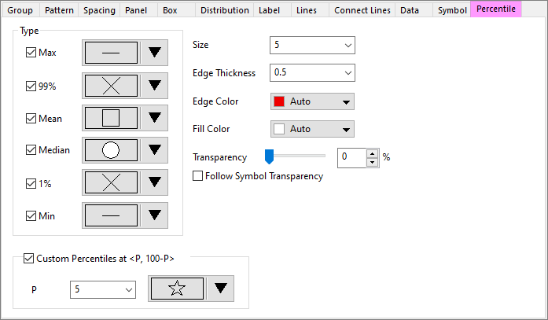
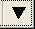
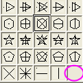
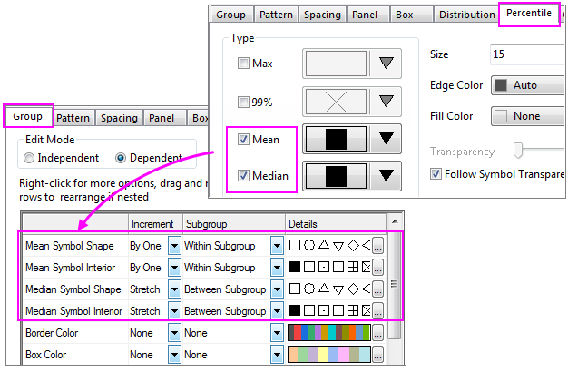

Die Registerkarte Prozentangaben (Details Zeichnung)
PD-Dialog-Percentile-Tab
Die Registerkarte Prozentangaben bietet Bedienelemente zum Anpassen der Symbole, die bei bestimmten Perzentilen angezeigt werden.
- 
Typ
Klicken Sie auf den nach unten zeigenden Pfeil  neben dem/der Symbol/Statistik, das/die Sie ändern möchten. Wählen Sie das gewünschte Symbol in der sich öffnenden Symbolgalerie.
Um kein Symbol anzuzeigen, wählen Sie eine leere Zelle in der Symbolgalerie.
- 
 |
Origin unterstützt das Anpassen unterschiedlicher Formen für die Perzentile Mittelwert/Median auf der Registerkarte Gruppe im Dialog Details Zeichnung.
Wenn Sie Mittelwert/ Median auf der Registerkarte Prozentangaben aktivieren, sehen Sie Symbolform des Mittelwerts und Symbolinneres des Mittelwerts/Symbolform des Medians und Symbolinneres des Medians unter der Tabelle der Gruppeninkrementierung auf der Registerkarte Gruppe aufgelistet.

Falls Inkrement = Kein für die obige Option ausgewählt ist, folgt der Symboltyp des Perzentils der Einstellung auf der Registerkarte Prozentangaben.
|
Benutzerdefinierte Perzentile bei <P, 100-P>
Legen Sie fest, ob die benutzerdefinierten Perzentilsymbole im Boxdiagramm gezeigt werden sollen.
Wenn das Kontrollkästchen Benutzerdefinierte Perzentile bei <P, 100-P> aktiviert ist, kann der Perzentilwert im Feld P ausgewählt oder eingegeben werden.
Um das gewünschte Symbol aus der Symbolgalerie auszuwählen, klicken Sie auf den Pfeil nach unten unter diesem Abschnitt.
Größe
Stellen Sie die Punktgröße für alle Symbole in der Auswahlliste ein.
Randbreite
Legen Sie die Rahmenbreite des Perzentilsymbols fest. Einheiten = Punktgröße. Identisch mit der Rahmenbreite auf der Registerkarte Symbol, wenn Skalieren nach Symbolgröße deaktiviert ist.
Randfarbe
Stellen Sie die Rahmenfarbe für alle Symbole ein.
Füllfarbe
Stellen Sie die Füllfarbe für alle Symbole ein. Beachten Sie, dass einige Symboltypen in der Galerie keine separate Füllfarbe haben, und verwenden Sie die Rahmenfarbe als Füllfarbe oder keine Füllfarbe.
Transparenz
Diese Option steuert die Transparenz der Perzentilsymbole. Bewegen Sie den Schieber oder geben Sie eine ganze Zahl von 0 bis 100 in das Kombinationsfeld ein. Beachten Sie, dass das Symbol bei 0 gar nicht und bei 100 vollkommen transparent ist.
Wenn das Kontrollkästchen Symboltransparenz folgen aktiviert ist, entspricht die Transparenz der Perzentilsymbole derjenigen des Symbols.